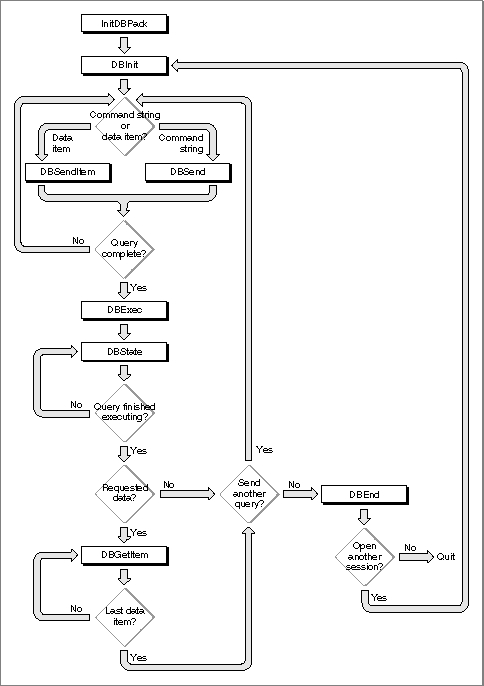

Legacy Document
Important: The information in this document is obsolete and should not be used for new development.
Important: The information in this document is obsolete and should not be used for new development.


Using the Low-Level Interface
You can use the low-level interface to establish communication (initiate a session) with a data server, send a query to the data server, execute the query, and retrieve any data requested by the query. You call one or more low-level routines to accomplish each of these tasks.Applications that implement this type of data access must provide user control and feedback, as described in "General Guidelines for the User Interface" on page 12-13. When the data source is ready to return data, you can retrieve it all and then display it to the user, or you can display the data as it arrives. If the data arrives slowly, it's best to display it one record at a time as it arrives. This way the user can preview the data, decide if it's the desired information, and cancel the query if not.
Figure 12-5 is a flowchart of a typical session using the low-level interface. As Figure 12-5 illustrates, you must follow this procedure to use the low-level interface:
Figure 12-5 A flowchart of a session using the low-level interface
- Call the
InitDBPackfunction to initialize the Data Access Manager.- Call the
DBInitfunction to establish communication with the data server. TheDBInitfunction returns an identification number, called a session ID. This session ID is unique; no other current session, for any database extension, has the same session ID.

You must specify the session ID any time you want to send data to or retrieve data from this session.
The
DBInitfunction requires as input parameters the name of the database extension and character strings for the host system, user name, password, and connection string. All of these parameters depend on the user and the user's computer system, including the specific database extension, host computer, data server, and database management software in use. You will not know the user name and password when you are writing an application, and you might not know the values of any of these parameters. Therefore, you must display a dialog box that prompts the user for the necessary information.Depending on the database extension you are using, the
DBInitfunction might return a session ID of zero if it fails to initiate a session, or it might return a nonzero session ID and a result code other thannoErr. In the latter case, you can pass the session ID to theDBGetErrfunction to determine the cause of the error. If theDBInitfunction returns a nonzero session ID and a result code other thannoErr, you must call theDBEndfunction before making another attempt to open the session.
Listing 12-4 Sending a query fragment
- Prepare a query, and send it to the data server by calling the
DBSendandDBSendItemfunctions one or more times.An application that uses the low-level interface must be capable of creating a query for the data server in the language and format required by that data server.
The
DBSendfunction sends a query or a portion of a query to the data server. The data server appends this portion of the query to any portion you sent previously. Because the Data Access Manager and data server do not modify the string you send in any way, they do not insert any delimiter between fragments of queries that you send to the data server. If you want a blank or a semicolon to be included between query fragments, or if you want to use return characters to divide the query into lines of text, you must include them in the character string that you send with theDBSendfunction. The data string that you send with theDBSendfunction can be any length up to 64 KB.The
DBSendItemfunction sends a single data item to the data server. Use theDBSendItemfunction to send data items to the data source in the same format as they are retrieved from the data source by theDBGetItemfunction. You must specify the data type as an input parameter and, for any data type that does not have an implied length, you must specify the length as well. The database extension or the data server (depending on how the system is implemented) converts the data item to a character string and appends it to the query, just as a query program fragment is appended to the query by theDBSendfunction.You can call the
DBSendandDBSendItemfunctions as many times as you wish to send your query to the data server.Listing 12-4 sends the Data Access Language query fragment "
print 451+222;" to the Data Access Language server.
FUNCTION MySendFragment(sessID: LongInt): OSErr; VAR value1: LongInt; value2: LongInt; text1, text2, text3: Str15; text1Ptr, text2Ptr, text3Ptr: Ptr; rc: OSErr; BEGIN text1 := 'print '; value1 := 451; text2 := '+'; value2 := 222; text3 := ';'; MySetTextPtrs(text1, text1Ptr, text2, text2Ptr, text3, text3Ptr); rc := DBSend (sessID, text1Ptr, LENGTH(text1), NIL); IF rc = noErr THEN rc := DBSendItem (sessID, typeInteger, 0, 0, 0, Ptr(ORD(@value1)), NIL); IF rc = noErr THEN rc := DBSend (sessID, text2Ptr, LENGTH(text2), NIL); IF rc = noErr THEN rc := DBSendItem (sessID, typeInteger, 0, 0, 0, Ptr(ORD(@value2)), NIL); IF rc = noErr THEN rc := DBSend (sessID, text3Ptr, LENGTH(text3), NIL); MySendFragment := rc; END;The procedure in Listing 12-5 uses the low-level interface to send a Data Access Language routine to the Data Access Language server on a remote computer and then retrieves the results. The procedure initiates a session with a remote database and calls the
- Use the
DBExecfunction to initiate execution of the query.Depending on the way the system you are using is implemented, the
DBExecfunction might return control to your application as soon as the query has begun execution.- Use the
DBStatefunction to determine the status of the data source.The
DBStatefunction tells you when the data server has finished executing the query you just sent. If you have requested data, the data server stores the data you requested but does not send it to your application until you request it explicitly. TheDBStatefunction tells you when the data is available; if data is available, go to step 6. If you wish to send another query, return to step 3. If you are finished using the data source, skip to step 7.- Call the
DBGetItemfunction repeatedly to retrieve the data.The
DBGetItemfunction retrieves the next data item from the data server. You can also use this function to obtain information about the next data item without retrieving the data. When you use theDBGetItemfunction to retrieve a data item, you must specify the location and size of the buffer into which the function is to place that item. If you know beforehand what kind of data to expect, you can allocate a buffer of the exact size you need. If you do not know what type of data to expect, you can first call theDBGetItemfunction with aNILpointer to the data buffer. TheDBGetItemfunction then returns information about the next data item without actually retrieving it. You can then allocate the appropriate buffer and callDBGetItemagain.Alternatively, to avoid calling
DBGetItemtwice for each data item, you can allocate a buffer that you expect to be of sufficient size for any data item and call theDBGetItemfunction. If the buffer is not large enough for the data item, theDBGetItemfunction returns thercDBErrorresult code, but still returns information about the data item. You can then allocate the necessary buffer, call theDBUnGetItemfunction to go back one data item, and call theDBGetItemfunction again to retrieve the data item a second time.The
DBGetItemfunction includes atimeoutparameter that you can use to specify the maximum amount of time that the database extension should wait to receive results from the data server before canceling the command. If the database extension you are using does not support asynchronous execution of routines, you can use thetimeoutparameter to return control to your application while a query is executing. To use thetimeoutparameter in this way, call theDBGetItemfunction periodically, specifying a brief period of time for thetimeoutparameter. Your application can then retrieve the next data item as soon as execution of the query is complete without having to call theDBStatefunction to determine when data is available. TheDBGetItemfunction ignores thetimeoutparameter if you make an asynchronous call to this function.- When you are finished using the data source, you must use the
DBEndfunction to terminate the session. You must call theDBEndfunction after theDBInitfunction has returned a nonzero session ID, even if it also returned an error.
MySendFragmentroutine (Listing 12-4) to send a query. Next, it executes the query, checks the status of the remote database server, and retrieves the data when it's available. This example retrieves only one data item. To retrieve more than one data item, put the data-retrieval code in a loop.Listing 12-5 assumes that the database extension does not support asynchronous execution of Data Access Manager routines. For an example of asynchronous execution of routines, see Listing 12-1 beginning on page 12-18.
Listing 12-5 Using the low-level interface
PROCEDURE MyLoLevel(VAR thisSession: LongInt; VAR sessErr: OSErr); VAR theDDevName: Str63; theHost, theUser: Str255; thePasswd, theConnStr: Str255; packErr, initErr, sendErr, execErr: OSErr; stateErr, getErr, endErr: OSErr; myTimeout: LongInt; myType: DBType; len, places, flags: Integer; myBuffer: Ptr; myDataInfo: Boolean; myDataReturned: Boolean; BEGIN sessErr := noErr; {assume everything went fine} packErr := InitDBPack; {init the Data Access Mgr} {Set up values for theDDevName, theHost, theUser, thePasswd, } { and theConnStr. You can display a dialog box prompting } { the user to supply some of these parameters.} theDDevName := 'DAL'; theHost := 'The Host System Name'; theUser := 'Joe User'; thePasswd := 'secret'; theConnStr := 'extra stuff as needed'; initErr := DBInit(thisSession, theDDevName, theHost, theUser, thePasswd, theConnStr, NIL); IF initErr <> noErr THEN BEGIN sessErr := initErr; IF thisSession <> 0 THEN endErr := DBEnd(thisSession, NIL); EXIT(MyLoLevel); END; {send a query or query fragment to the remote data server} sendErr := MySendFragment(thisSession); {If there's an error, then probably something went wrong with } { DBSend or DBSendItem. Don't forget to end the session.} IF sendErr <> noErr THEN BEGIN sessErr := sendErr; endErr := DBEnd(thisSession, NIL); EXIT(MyLoLevel); END; {The query has been sent. This example assumes that } { the query will return data.} execErr := DBExec(thisSession, NIL); IF execErr = noErr THEN BEGIN stateErr := rcDBExec; WHILE (stateErr = rcDBExec) DO BEGIN {while waiting for stateErr <> rcDBExec, } MyGoDoSomething; { let other apps run} stateErr := DBState(thisSession, NIL); END; {DBState returned a result code other than rcDBExec. } { If it's rcDBValue, there are results to retrieve. } { Otherwise, it's probably an error.} IF stateErr = rcDBValue THEN BEGIN {call DBGetItem once to get info on the data item and } { call DBGetItem a second time to get the data item} myTimeout := 2*60; {2*60 ticks = 2 seconds} myType := DBType(typeAnyType); myDataInfo := FALSE; WHILE NOT myDataInfo DO BEGIN getErr := DBGetItem(thisSession, myTimeout, myType, len, places, flags, NIL, NIL); {If you timed out, then give up control. When } { control returns, continue getting the info.} IF getErr = rcDBBreak THEN MyGoDoSomething ELSE IF (getErr = noErr) OR (getErr = rcDBValue) THEN myDataInfo := TRUE ELSE BEGIN sessErr := getErr; endErr := DBEnd(thisSession, NIL); EXIT(MyLoLevel); END; END; {while} {At this point, you may want to examine the info } { about the data item before calling DBGetItem a } { second time to actually retrieve it.} {MyGimmeSpace returns a pointer to where you want } { the data item to go.} myBuffer := MyGimmeSpace(len); myDataReturned := FALSE; WHILE NOT myDataReturned DO BEGIN getErr := DBGetItem(thisSession, myTimeout, myType, len, places, flags, myBuffer, NIL); {If you timed out, then give up control. When } { control returns, continue getting the data.} IF getErr = rcDBBreak THEN MyGoDoSomething ELSE IF (getErr = noErr) OR (getErr = rcDBValue) THEN myDataReturned := TRUE ELSE BEGIN sessErr := getErr; endErr := DBEnd(thisSession, NIL); EXIT(MyLoLevel); END; END; {while} END ELSE sessErr := stateErr; END ELSE sessErr := execErr; endErr := DBEnd(thisSession, NIL); END;Note that, even if you are using the low-level interface to send queries to the data server, you might want to use the high-level functions to retrieve data and convert it to text.